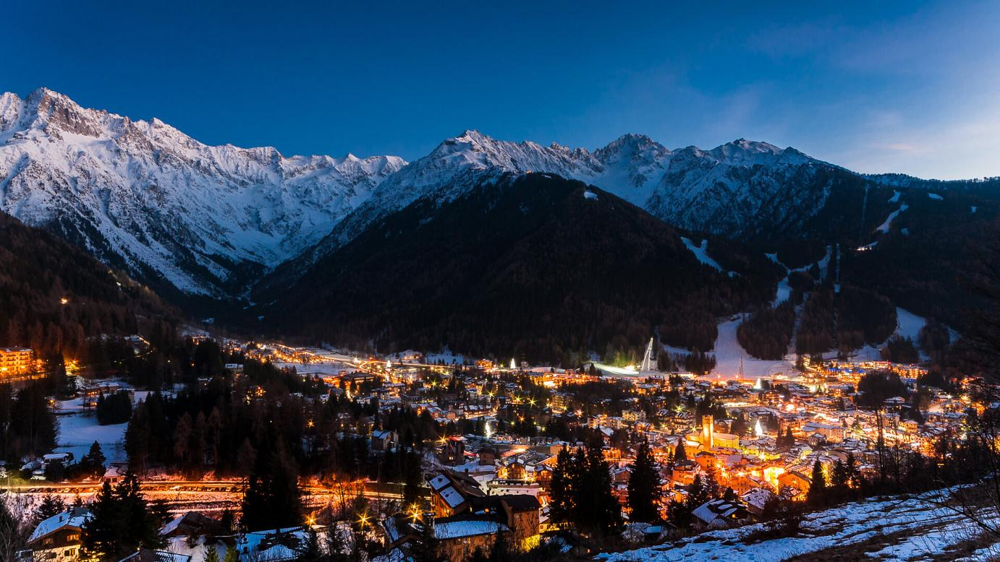

De Alpen zijn bergen verspreidt over vele landen zoals, Zwitserland, Oostenrijk, Frankrijk en Italië. wij gaan het hebben over de bergen in Italië. De Alpen liggen in het Noorden van Italië. Ze zijn erg populair voor Wintersport maar ook voor mountainbikers en wandelaars in de zomer. Ik ga drie mooie plekken in de Italiaanse Alpen opnoemen.
Mooiste plekken:
- Lago Maggiore
Het tweede grootste meer van Italië strekt zich uit van de zuidelijke Alpen in Lombardije tot de noordelijke buur Zwitserland. In de zomer vindt het Spirit of Woodstock Festival plaats op de oevers. Maar het hele jaar door biedt dit geweldige meer de beste outdooractiviteiten aan van heel Noord-Italië. Rondom het meer is het landschap prachtig.
- Nationaal Park Gran Paradiso
Dit prachtige park, het oudste nationaal park van Italië, is vernoemd naar de Gran Paradiso-berg. Het is te vinden in het noordwestelijke deel van de Italiaanse Alpen. Naast het opvallende landschap, de valleien, de bergmeren, de gletsjers en de alpenweiden, vind je hier diverse bedreigde soorten, zoals de Alpine ibex, gemzen, oehoes en nog veel meer. Veel mensen komen naar het Nationaal Park Gran Paradiso om een stevige wandeling te maken en te genieten van het fantastische uitzicht op de Alpen.
- Ponte di Legno
Dit is een aanrader voor de winter en zomer. voor wintersport is het vol met pistes en is er uiteraard lekker eten te vinden. Ik ga er zelf altijd heen met wintersport en het is geweldig. In de zomer is het prachtig. Ik maak dan altijd wandelingen met mijn familie. Het zijn veel verschillende soorten dus er is voor iedereen wat. Letterlijk betekent Ponte di Legno, brug van hout.
